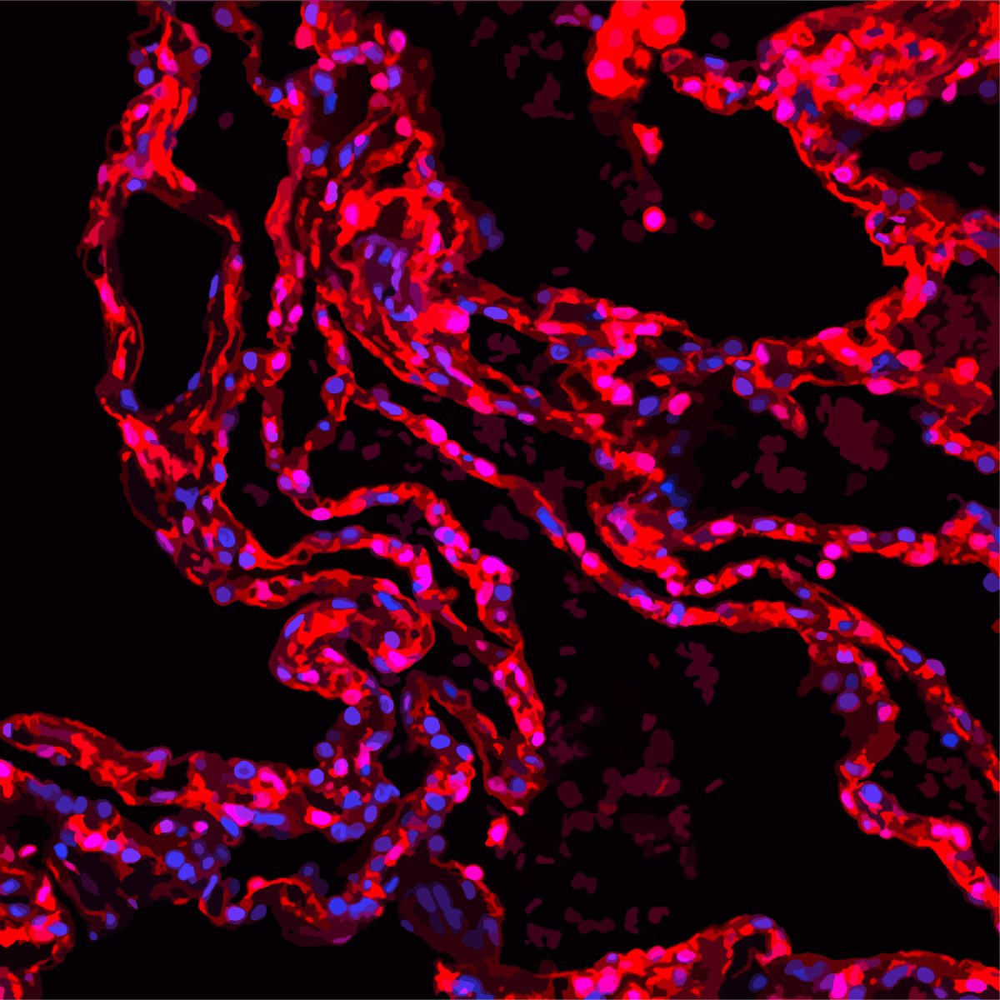

jan markiewski
linkedin
orcid
google scholar
phone
email
Extracellular vesicles modulate integrin signaling and subcellular energetics to promote pulmonary lymphangioleiomyomatosis metastasis
journal article
Communications Biology
authors
Kalvala, Anil Kumar et al.
doi
10.1038/s42003-025-09004-9

related
read the article in Communications Biology
view on Zenodo
Texas Tech University Health Sciences Center — research experience